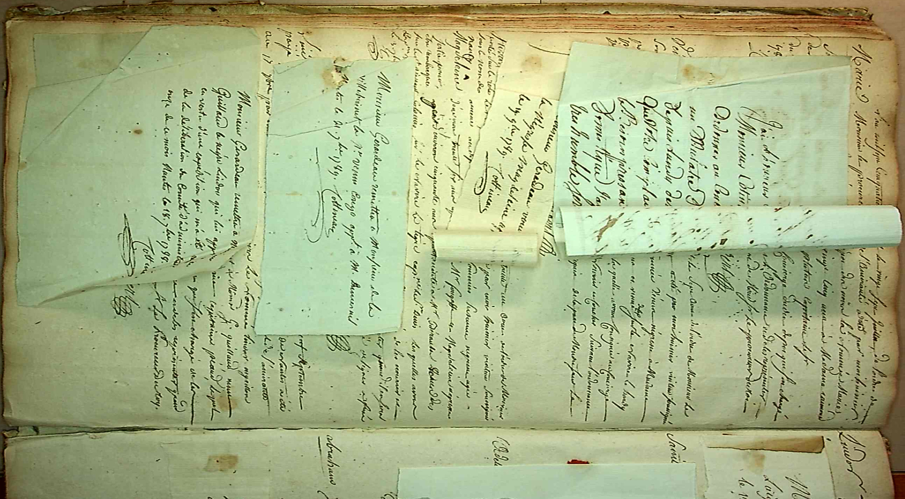

Articles de blog

Visite et numérisations aux Archives départementales de Loire-Atlantique (Nantes)
À venir
Inventaire des projets passés, en cours et à venir portant sur les mobilités, les mobilités des femmes et plus généralement concernant les archives liées aux territoires de Martinique, Guadeloupe et Guyane
À venir
HTR et REN sur données bruitées
À venir